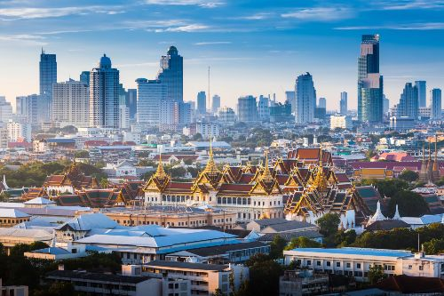
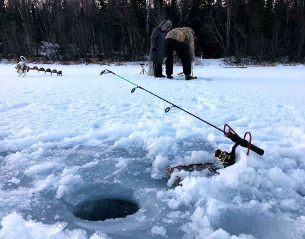

Bangkok

This summer, I went to Bangkok, Thailand, and it has to be one of the coolest places
I've ever visited. The food there was absolutely amazing. On top of that, everything was really
affordable, which made exploring even more fun. The people in Bangkok were incredibly kind and
welcoming. There were so many things to do and see—from stunning temples and bustling street markets to
vibrant nightlife and peaceful river cruises. The city is full of beautiful views that truly make you
stop and gaze in awe. What struck me the most was the cultural contrast between Thailand and the United
States. Seeing how differently people live there was a bit of a shock—but in the best way. It was
fascinating to witness another way of life and experience how things are done in another part of the
world. It really opened my eyes to the diversity of lifestyles across the globe.
Leon Vang - About me

When I'm not traveling, working, or at school I love spending my free time doing two things: playing
golf and ice fishing. I actually got back into golf not too long ago. A few of my coworkers invited me
to join them for a round, and after that, I was hooked. Since then, I've been playing more and more, and
I've reached a point where golf has become something I truly enjoy. There's something really satisfying
about improving your swing, spending time outdoors, and just enjoying the game. Another passion of mine
is ice fishing. When winter rolls around and the lakes freeze over, I can't wait to get out there.
Whether I'm catching perch or whitefish, the adrenaline rush of pulling fish up one after another is
what keeps me going back. It's peaceful, exciting, and a great way to enjoy the outdoors during the
colder months.